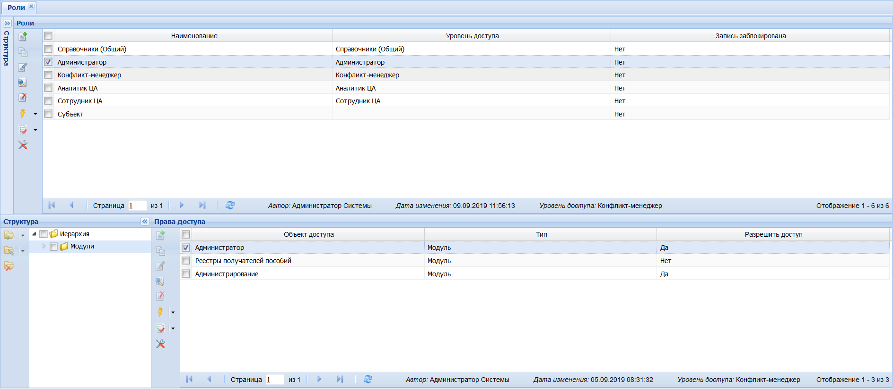

|
<< Click to Display Table of Contents >> 2.2.1 Роли |
  
|
|
<< Click to Display Table of Contents >> 2.2.1 Роли |
|
Разграничение прав доступа к разделам подсистемы осуществляется на уровне ролей.
Подраздел «Роли» предназначен для просмотра ролей пользователей. Подраздел разделен на две экранные формы (Рисунок 6). В главной экранной форме (Главная таблица) отображаются данные по существующим ролям в системе, а в нижней экранной форме (Таблица спецификации) осуществляется настройка доступности роли к разным модулям системы.

Рисунок 6 - Экранная форма раздела «Роли»
Подраздел «Роли» имеет перечень нижеперечисленных ролей, с разграничением прав доступа:
a)Справочники (Общий) – пользователь, обладающей данной ролью имеет возможность обращаться к общесистемным справочникам Системы (без права добавления и редактирования);
b)Субъект – пользователь этой роли является сотрудником ОИВ субъекта Российской Федерации, осуществляющего переданные полномочия Российской Федерации в области СЗН, отвечающим за своевременную передачу сегментов федерального реестра получателей пособий и имеет полномочия по:
a)просмотру аналитики по своему региону;
b)загрузке реестров по своему региону;
c)доступу к модулю проверки дублирования выплат пособий (все регионы);
- Сотрудник – пользователь этой роли является сотрудником ЦА Роструда, осуществляющим формирование и ведение федерального реестра получателей пособий и имеет доступ к аналитике.
- Аналитик – пользователь этой роли является сотрудником ЦА Роструда, осуществляющим анализ данных в федеральном реестре получателей пособий, который кроме прав доступа роли «Сотрудник» может удалять реестры, которые были загружены регионами (все регионы) в модуле ввода и загрузки данных;
- Конфликт-менеджер – пользователь этой роли является сотрудником службы технической поддержки, в полномочия которого входят все права доступа роли «Аналитик», а так же:
a)создание и редактирование учетных данных пользователей;
b)наполнение справочников Системы;
c)обновление конфигурации;
d)доступ к модулю проверки дублирования выплат пособий (все регионы).
- Администратор – пользователь этой роли имеет максимально допустимые права доступа.